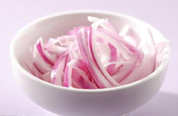
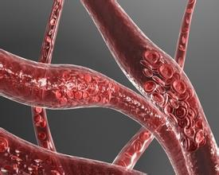
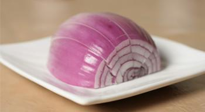
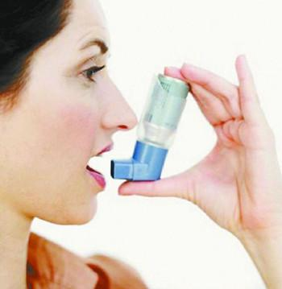

洋葱是极少数含有前列腺素A的蔬菜，前列腺素A是一种较强的血管扩张剂，能够软化血管，降低血液黏稠度，增加冠状动脉血流量，促进引起血压升高的钠盐等物质的排泄，因此既能调节血脂，还有降压和预防血栓形成的作用。
送您好吃凉拌洋葱作法:
Step 1洋葱洗净切丝。
Step 2容器内装冰水，将洋葱丝浸于冰水中，置冰箱下层泠藏。
Step 3隔天捞起洋葱拌蚝油，好吃无辛味的生菜。
1、洋葱比骨质酥松症的药有效
家庭主妇不爱用洋葱做菜，处理时会让人流眼泪，很多人也怕洋葱味。除非是手艺高超的洋葱料理，否则真的很难找到洋葱的热爱者。
但是想要让自己骨骼结实、身体长得高、预防骨质疏松症的人，最好还是乖乖地捏着鼻子吃洋葱吧。
因为权威期刊「自然」的最新研究报告指出，洋葱是最能够防止骨质流失的一种蔬菜。洋葱预防骨质流失的效果，甚至比骨质疏松症治疗药品「calcitonin」还要好。
研究人员让雄性大白鼠每天吃一公克干洋葱，连续一周后，公白鼠的骨质平均增加了13.5-18%。另一组实验则发现，让大白鼠食用含有洋葱的溷合蔬菜，也能够减少骨质流失问题。第三组实验则是让摘除卵巢的雌性大白鼠每天吃1.5公克的洋葱，结果骨质流失的速率减少了25%。
更值得注意的是，洋葱的保健功效在短短12小时内就看得到了。研究人员认为，洋葱的效果可能来自于「预防骨质流失」，因此想要利用洋葱保健的人，每天可能要吃上200-300公克(10盎司)的洋葱，才能够预防骨质疏松症。

医食同源，在我们日常食物中，有很多蔬菜水果都具有药物般的疗效;像西餐里少不了的配菜洋葱，它对身体的好处简直超乎想象。
洋葱炒蛋，或洋葱炒牛肉，都是美味无比的健康菜;而洋葱还可以用来生吃或榨汁喝，根据医学实验，它更能发挥多种神奇疗效。
2、洋葱可以预防胆固醇过高

据哈佛医学院心脏科教授克多格尔威治博士指出，每天生吃半个洋葱，或喝等量的洋葱汁，平均可增加心脏病人约30%的HDL含量(HDL为高密度脂蛋白胆固醇，一种被认为有助于预防动脉粥状硬化的胆固醇，也是一种的好的胆固醇。)
每天生吃半个洋葱，或喝等量的洋葱汁，以保护心脏，这原是个民间偏方，克多博士在自己的诊所里对病人进行实验，证明洋葱确有提升好胆固醇的疗效，不过洋葱煮得越熟，越不具效果。
3、洋葱可以分解脂肪
克多博士让诊所里的心脏病人每天吃洋葱，结果发现洋葱里所含的化合物也能阻止血小板凝结，并加速血液凝块溶解。所以，当你享用高脂肪食物时，最好能搭配些许洋葱，将有助于抵销高脂肪食物引起的血液凝块，所以说牛排通常搭配洋葱一起吃，是很有道理的。
4、洋葱可以预防胃癌

洋葱和大蒜、大葱、韭菜这些葱属蔬菜，因含有抗癌的化学物质，据研究人员在中国山东省一个胃癌罹患率很高的地方所做研究发现，当洋葱吃得越多，得胃癌的机率就越低。
5、洋葱可以对抗哮喘

洋葱含有至少三种抗发炎的天然化学物质，可以治疗哮喘。由于洋葱可以抑制组织胺的动，而组织胺正是一种会引起哮喘过敏症状的化学物质;据德国的研究，洋葱可以使哮喘的发作机率降低一半左右。
6、洋葱可以治疗糖尿病
很久以前，洋葱就被用来治疗糖尿病，到现代，医学也证明洋葱确实能够降血糖而且不论生食或熟食，都同样有效果。原来洋葱里有一种抗糖尿病的化合物，类似常用的口服降血糖剂甲磺丁胺，具有刺激胰岛素合成及释放的作用。
7、洋葱可以防治失眠
洋葱的妙用还不止上述这些，在日常生活中，洋葱还可用来防治失眠：将切碎的洋葱放置于枕边，洋葱特有的刺激成分，会发挥镇静神经、诱人入眠的神奇功效。
8、洋葱可以防治鼻塞
感冒的时候，喝加了洋葱的热味噌汤，很快就可发汗退烧。如果鼻塞，以一小片洋葱抵住鼻孔，洋葱的刺激气味，会促使鼻子瞬间畅通起来。
另外，洋葱剥去外面褐色的皮切开泡红酒,放在冰箱冷藏，一周后就可拿出来饮用，洋葱也可以吃，对治疗痛风很有效。

慈铭奥亚官方公众微信“私人医生”（微信号：sirenyisheng007）